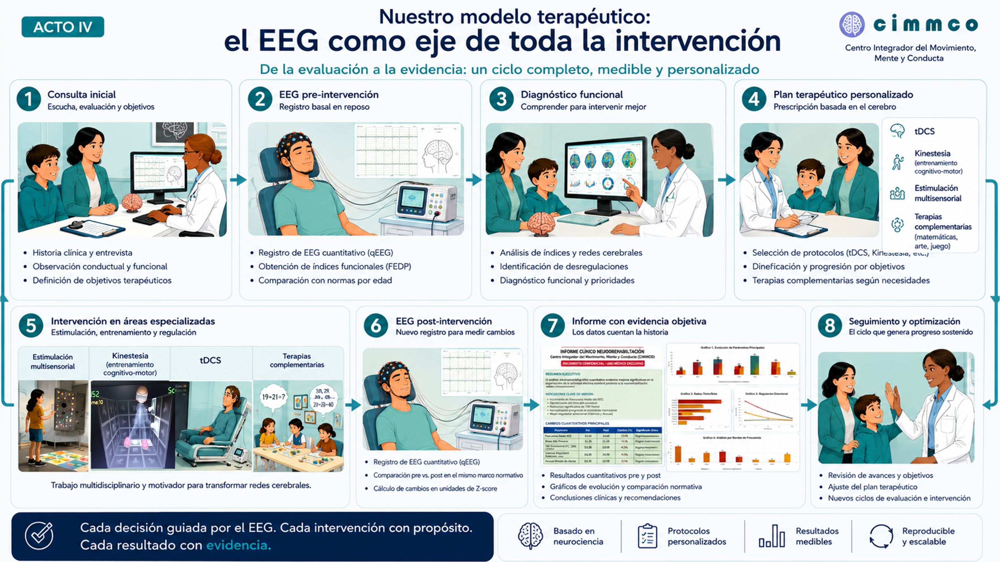
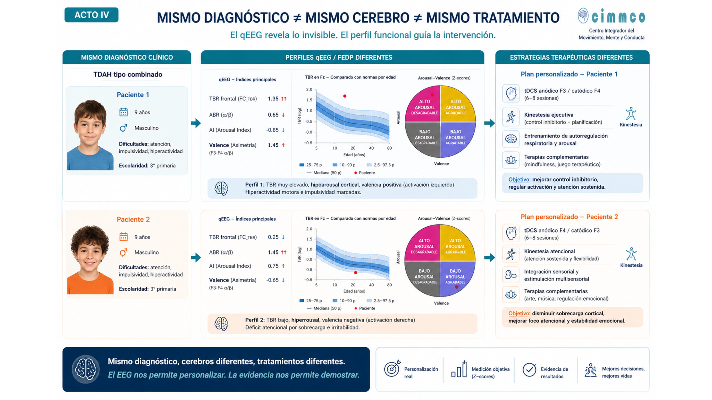

CIMMCO es un centro clínico pionero en el abordaje integral de condiciones del neurodesarrollo y neurodiversidad (TDAH, autismo, lenguaje, conducta, aprendizaje, síndrome de Down), salud neuropsiquiátrica (ansiedad, depresión, trauma, dolor crónico) y neurorrehabilitación. Atendemos desde la infancia hasta el adulto mayor con alternativas no medicamentosas mediante neuromodulación avanzada y protocolos personalizados basados en evidencia científica.
Un método propio, estructurado y centrado en la persona

Nuestro modelo integra evaluación, intervención y seguimiento en un ciclo continuo que se adapta a cada etapa de la vida.
Centro Integrador del Movimiento, Mente y Conducta
CIMMCO combina herramientas avanzadas como EEG de 19 canales, estimulación cerebral no invasiva (tDCS, rTMS), videojuegos terapéuticos, terapias sensoriales, cognitivas y del lenguaje, con un acompañamiento psicoterapéutico y familiar constante.
Nos especializamos en el diagnóstico, tratamiento y rehabilitación de condiciones neurocognitivas, emocionales y motrices, con un enfoque basado en la evidencia científica y en el respeto a la diversidad neurofuncional.
Integridad y transparencia en todos nuestros procesos.
Respeto a la diversidad neurofuncional.
Colaboración interdisciplinaria constante.
Buscamos siempre las mejores prácticas y tecnologías.
Contribuimos al bienestar de nuestra comunidad.
Basamos nuestras intervenciones en evidencia.
Un ciclo completo, medible y personalizado. Cada persona recibe un plan diseñado a partir de su evaluación funcional, sus objetivos y su contexto familiar y escolar/laboral.
Este proceso se documenta y se revisa periódicamente, asegurando que la intervención se adapte a la evolución de cada caso.

Profesionales altamente capacitados comprometidos con tu bienestar
Creador de Kinestesia. Investigador Titular. Director de CIMMCO
Neurocientífico. Doctor en Ciencias de la Salud. Especialista en análisis cuantitativo del EEG, conectividad cerebral, neuromodulación y neuro-rehabilitación. Diseña y supervisa los programas de Kinestesia, integra objetivos motores y cognitivos. Responsable de los protocolos de registro y análisis cuantitativo del EEG.
Terapeuta certificada en Kinestesia. Subdirectora de CIMMCO
Certificada en Kinestesia por el programa CONOCER. Especialista en neuromodulación, integración multisensorial, EEG, valoración psicomotora, funcional y del adulto mayor. Docente universitaria. Certificación del curso "Healthy Ageing, for impact in the 21st Century" de la OMS. Fisioterapeuta especializada en alivio del dolor muscular y crónico, así como en reeducación muscular.
Dra. en Medicina, Dra. en Ciencias. Investigadora Titular
Responsable de la integración diagnóstica, la formulación de caso y la coordinación terapéutica global. Especialista en Neurofisiología Clínica, diagnóstico y tratamiento de la Epilepsia, neuromodulación, electroencefalografía, integración sensorial y terapia infantil.
Psicoeducadora, divulgadora y mentora
Licenciada en Ciencias de la Comunicación, psicoeducadora, conferencista y consultora en neurodiversidad e inclusión, con más de una década de experiencia en desarrollo humano y neurociencia aplicada. Mujer neurodivergente con diagnóstico tardío de TDAH, rasgos de autismo, altas capacidades y trauma complejo, ha transformado su historia personal en una misión de visibilización, prevención y acompañamiento informado por trauma. Es fundadora de DNA Talent, consultoría especializada en inclusión laboral, y cofundadora de El Refugio, plataforma digital para personas neurodivergentes hispanohablantes. Colabora con el International Neurodiversity College (INCL) en iniciativas internacionales. En 2023 fue la única mexicana invitada al Primer Congreso de Empleabilidad y Neurodiversidad en Valencia, España. Su trabajo integra psicoeducación, neurociencia aplicada y perspectiva de trauma con una mirada profundamente humana sobre la mente y la conducta.
Fisioterapeuta
Terapeuta experimentada en Kinestesia en niños y en estimulación integral del adulto mayor. Certificada en neuromodulación. Fisioterapia enfocada al dolor corporal, cansancio crónicos, y el estrés. Con amplia experiencia en el manejo de niños con conductas oposicionistas e intervenciones como terapeuta de empresas.
Fisioterapeuta
Terapeuta físico, terapeuta de Kinestesia y técnico en EEG. Formada en manejo del dolor crónico en fisioterapia. Experiencia en investigación científica en la UNAM. Integra movimiento, juego y creatividad como herramientas terapéuticas para facilitar el aprendizaje y promover la participación activa de sus pacientes.
Fisioterapia y Estimulación temprana
Especialista en terapia de neurohabilitación (método Katona) en neonatos con riesgo neurológico y neurodesarrollo infantil. Terapeuta de Kinestesia, neuromodulación y arteterapia. Integra estimulación sensorial y recursos creativos para potenciar la neuroplasticidad y el desarrollo funcional desde las primeras etapas de la vida.
Fisioterapeuta y Docente Universitario
Terapeuta de Kinestesia, terapeuta físico, especialista en biomecánica. Utiliza el enfoque fenomenológico, que parte de la experiencia del paciente y de su forma de percibir la realidad, para adaptar la intervención a su manera particular de interactuar con el mundo.
Psicóloga
Psicóloga Clínica y Educativa. Especialidad en Neuroterapia y Psicomotricidad Infantil. Experiencia en el diagnóstico y seguimiento en trastornos del neurodesarrollo, como TEA, TDAH, TDC, entre otros. Acompañamiento psicológico y emocional. Diplomados en neurodesarrollo y tanatología. Impartición de talleres diversos, tanto para el ámbito escolar, como familiar.
Lic. en alteraciones de la audición y el lenguaje
Maestra y Doctora en Ciencias en Lingüística. Docente universitaria. Estudia los procesos cognitivos y su relación con el desarrollo linguístico. Especialista en evaluación, diagnóstico y terapia de los trastornos del lenguaje.
Nuestro equipo está conformado por neurofisiólogos, neuropsicólogos, terapeutas ocupacionales, fisioterapeutas, psicólogos, médicos especialistas e investigadores comprometidos con la formación continua.
Tratamientos personalizados para cada etapa de la vida
TDAH, autismo, diferencias en el lenguaje, ritmos propios de aprendizaje, síndrome de Down. Acompañamos desde la Neurodiversidad, trabajando sobre apoyos, regulación sensorial y habilidades funcionales sin forzar la supresión de estereotipias o rasgos propios.
Personas con daño neurológico (ictus, TCE, enfermedades neurodegenerativas, dolor crónico) y discapacidad de origen neurológico. Intervenciones adaptadas al grado de afectación, con objetivos realistas orientados a la independencia.
Ansiedad, depresión, trastornos del sueño, trauma complejo, estrés postraumático y estrés crónico. Espacio seguro para personas neurodivergentes, priorizando herramientas de autocuidado, agencia y autoafirmación.
Deterioro cognitivo y motor, Parkinson, fragilidad. Promovemos un envejecimiento saludable respetando los estilos cognitivos y sensoriales propios de cada persona, trabajando desde sus capacidades e historia de vida.
Acompañamiento a personas neurodivergentes (autismo, TDAH, dislexia, altas sensibilidades, perfiles mixtos) desde un enfoque neuroafirmativo: no buscamos "normalizar", sino adaptar el entorno, reducir el malestar y potenciar fortalezas.
Abordaje integral y personalizado para cada etapa de la vida
Primer paso para comprender a cada persona. Evaluación funcional guiada por EEG interpretado por neurofisióloga experta, para diseñar un plan terapéutico personalizado.
Terapia especializada que trabaja la modulación sensorial para potenciar el aprendizaje y la regulación emocional, con estímulos táctiles, visuales, auditivos y vestibulares.
Orientada a fortalecer la comunicación, comprensión y expresión, abordando dificultades en habla, lenguaje, aprendizaje, articulación y comunicación social.
Abordamos disfunciones neuro-musculoesqueléticas.
Programas individuales y grupales para promover el Envejecimiento Activo y Saludable.
Acompañamiento a cuidadores, guías personalizadas para el hogar y la escuela, y talleres para familiares.
Intervención temprana, programas para diagnóstico tardío, y acompañamiento escolar y laboral para neurodivergentes.
Arte, juego y creatividad como parte integral del desarrollo
Conocimiento accesible sobre neurociencia, salud mental y terapias innovadoras
Herramientas para familias y colaboraciones institucionales
Guías prácticas para manejar situaciones cotidianas, estrategias de comunicación y rutinas estructuradas.
Escalas estandarizadas como ASRS, AQ, SNAP para evaluación preliminar. Consulta siempre con un profesional.
Diccionario de términos neurocientíficos explicados de forma sencilla para comprender diagnósticos y tratamientos.
Detección tardía de TDAH, autismo y trauma complejo.
Programas de inclusión escolar y laboral para neurodivergentes.
Investigación conjunta en neurociencias y formación de especialistas.
Referencia y contrareferencia de pacientes para atención integral.
Nuestro modelo terapéutico se publica, se revisa y se contrasta con la comunidad científica internacional
Consulta los artículos completos, DOIs, PDFs descargables y preprints en nuestra página de publicaciones.
Ver Publicaciones CientíficasHistorias reales de transformación y superación
Resolvemos tus dudas más comunes
Estamos aquí para acompañarte en tu camino
Estamos listos para responder tus preguntas y agendar una evaluación inicial.
(442) 457-2504, (442) 380-3342
Lunes a Viernes: 7:00 am - 7:00 pm
Sábados: 7:00 am - 2:00 pm